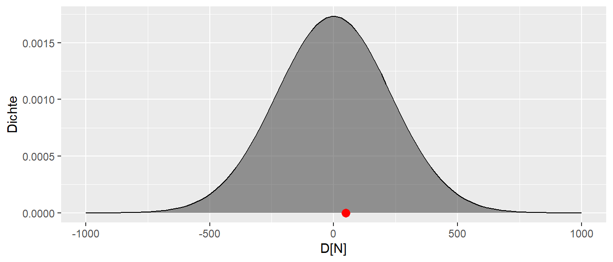
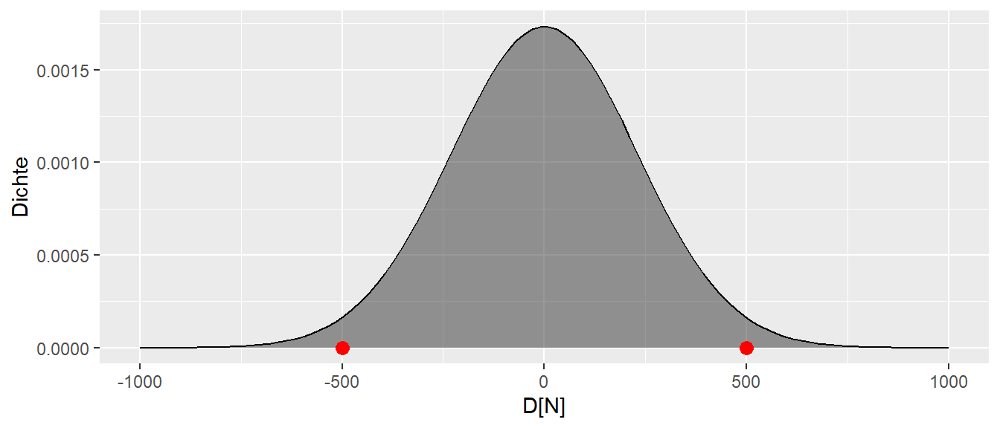
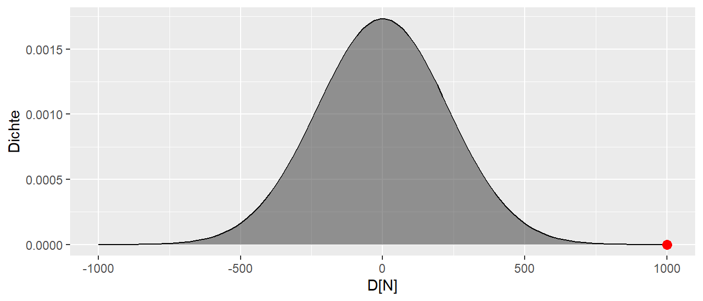
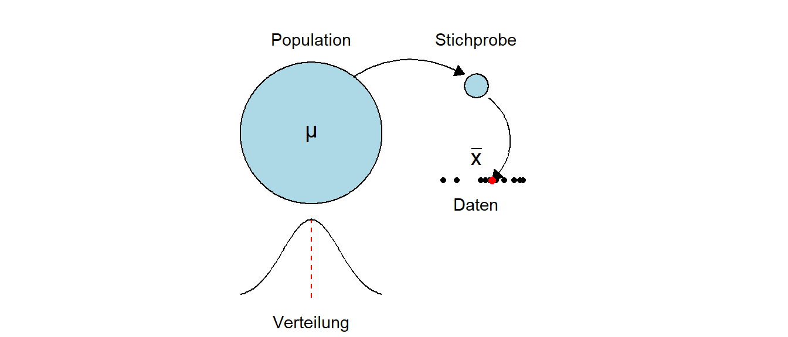
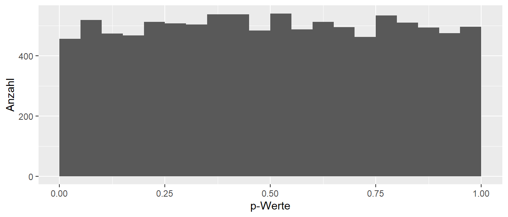

9 Statistische Signifikanz
Im vorherigen Kapitel wurde gezeigt, wie Unsicherheit ein zentrales Problem bei der Interpretation von experimentellen Ergebnissen bzw. Daten im Allgemeinen ist. Im folgenden Abschnitt wird nun ein Prozess hergeleitet, der es ermöglicht, vor dem Hintergrund dieser Unsicherheit rationale Entscheidung zu treffen.
9.1 Wie treffe ich eine Entscheidung
In dem kleinen Weltbeispiel bestand die komfortable Position, dass bekannt war , was passiert bzw. welcher Prozess die beobachteten Datenpunkt erzeugt hat. Das heißt, der datengenerierenden Prozess war bekannt.
Definition 9.1 (Datengenerierender Prozess (DGP)) Der Prozess in der realen Welt, der die beobachteten Daten und damit die daraus folgende Statistik erzeugt, wird als datengenerierender Prozess bezeichnet.
Letztendlich zielt jedwede Untersuchung darauf ab, Informationen über den DGP zu erhalten. Diese Information erlaubt es, Aussagen über die reale Welt zu treffen und eben Prozesse zu verstehen bzw. Voraussagen zu treffen. Dabei muss allerdings beachtet werden, dass dieser Prozess in den allermeisten Fällen eine starke Vereinfachung des tatsächlichen Prozesses in der Realität darstellt. Meistens sind die Abläufe in der Realität zu komplex, um sie in ihrer Gänze abzubilden. Somit wird fast immer nur ein vereinfachtes Modell verwendet.
Wenn nun ein Experiment durchgeführt wird, wird normalerweise nur eine einzige Statistik beobachtet. Im bisherigen Beispiel war dies der berechnete Unterschied \(D\) in der Kraftfähigkeit nach der Intervention zwischen der Kontroll- und der Interventionsgruppe.
In Abbildung 9.1 ist der beobachtete Wert \(d = 50\) abgetragen. Es ist von vorneherein bekannt, dass dieser Wert beeinflusst ist durch die zufällige Wahl der Stichprobe und die daran geknüpfte Streuung der Werte in der Population. Wie kann nun überhaupt eine Aussage darüber getroffen werden, ob das Krafttraining effektiv ist? Ob es nur einen sehr kleinen Effekt zeigt? Oder ob es möglicherweise sogar schädlich ist und zu einer Abnahme der Kraft führt?
Um sich der Lösung zu nähern, ist zunächst eine Überlegung hilfreich, welche Prozesse den beobachteten Wert generiert haben könnten. Im vorherigen Kapitel wurden bereits zwei Prozesse vorgestellt. Einmal der Prozess mit \(\Delta = 100\) sowie den Prozess mit \(\Delta = 0\).

In Abbildung 9.2 ist wieder der beobachtete Wert \(d = 50\) und die beiden Verteilungen abgetragen. Leider kann nicht eindeutig gesagt werden, welche der beiden Verteilungen bzw. deren zugrundeliegende Prozesse den beobachteten Wert erzeugt haben könnte. Der beobachteter Wert \(d\) liegt genau zwischen den beiden Maxima der Verteilungen. Etwas motiviertes Starren auf die Abbildung könnten einen allerdings auf die Idee bringen, dass der beobachtete Wert nicht nur von diesen beiden Verteilungen erzeugt worden sein muss, sondern durchaus noch mehr Verteilungen in Frage kommen können.

Abbildung 9.3 zeigt, dass selbst die Verteilungen mit \(\Delta = -250N\) und \(\Delta = 350N\) nicht unplausibel sind, den beobachteten Wert erzeugt zu haben. Warum aber bei diesen fünf Verteilungen aufhören? Warum sollte \(\Delta\) nicht \(-50\) oder \(127\) sein? Und überhaupt, niemand kann behaupten, die Natur kenne nur ganzzahlige Werte (siehe \(\pi\)). Warum sollte \(D\) also nicht auch \(123.4567N\) sein?
Wenn diese Überlegung weitergeführt wird, dann wird schnell klar, dass letztendlich eine unendliche Anzahl von Verteilungen in der Lage ist, den beobachteten Wert plausibel zu generieren. D.h. selbst wenn ein positiver Effekt gefunden wurde, könnte dieser Effekt auch von einer Verteilung bei der kein Effekt vorliegt generiert worden sein. Diese Einsicht ist natürlich etwas unbefriedigend, da nach dem ganzen Aufwand der notwendig ist, scheinbar keine klare Aussage darüber getroffen werden kann ob nun ein Effekt vorliegt oder nicht. Dass heißt es ist immer noch nicht klar, welcher datengenerierende Prozess den beobachteten Daten zugrundeliegt. Um dennoch ein Aussage anhand der Daten machen zu können seien im nächsten Schritt bestimmte Annahmen dazugenommen. Zum Beispiel könnte eine Annahme sein, dass der wahren Verteilung ein \(\Delta = -350N\) zugrundeliegt. Dies führt zum der folgenden Verteilung (siehe Abbildung 9.4).

Der beobachtete Wert unter der Annahme, dass das wahre \(\Delta = -350N\) ist, ist nicht vollkommen unmöglich, aber so richtig wahrscheinlich erscheint er auch nicht. Der Wert liegt relativ weit am Rand der Verteilung. Die Kurve ist dort schon ziemlich nahe bei Null. Das bedeutet, der beobachtete Wert ist zwar durchaus möglich, aber es wäre schon überraschend, wenn bei einer einzigen Durchführung des Experiments ausgerechnet so ein extremer Wert beobachtet werden würde, wenn das angenommenes \(\Delta\) korrekt ist.
Wie stellt sich der Sachverhalt dar, wenn dagegen von der Annahme ausgegangen wird, dass dem DGP der Wert \(\Delta = 50N\) zugrunde liegt? Dies würde z der Verteilung in Abbildung 9.5 führen. Zunächst ist dieser Wert unter der Annahme auch durchaus möglich. Zusätzlich liegt der beobachtete Wert mitten in dem Teil der Verteilung, der auch zu erwarten wäre. Das bedeutet, der beobachtete Wert ist durchaus plausibel unter der Annahme. Bei einer einmaligen Durchführung des Experiments würde der beobachtete Wert nicht unbedingt überraschen, wenn die Annahme von \(\Delta = 50N\) für den wahren Wert korrekt ist.

Der bisherige Ansatz kann nun so zusammengefasst werden, dass eine Annahme getroffen wird, die dazu führt das eine bestimmte Verteilung verwendet wird, dann kann der beobachtete Wert anhand der angenommen Verteilung bewertet werden. Die Auswahl der beiden Verteilungen eben war vollkommen willkürlich, d.h. wenn dieser Ansatz verfolgt werden soll, dass wird eine bestimmte Verteilung, so etwas wie eine Referenzverteilung benötigt, um den beobachteten Wert \(\delta\), den Unterschied zwischen den beiden Gruppen, bewerten zu können. Es könnte zum Beispiel die Annahme getroffen werden, dass der Unterschied zwischen den beiden Gruppen \(\Delta_{\text{wahr}} = 75N\) ist. Das heißt, dies wäre der wahre Unterschied zwischen den beiden Gruppen. Der wahre Unterschied wird im Experiment aller Voraussicht nach nicht genau getroffen, da eine Zufallsstichprobe gezogen wird und die Stichprobenvariabilität dazu führt, dass nicht genau der wahre Unterschied getroffen wird. Allerdings wird etwas Nachdenken über den Wert \(75N\) zu der Einsicht führen, dass \(75\) vollkommen willkürlich ist. Warum nicht \(85N\) oder \(25N\), oder warum überhaupt ganzzahlig? Schließlich ist \(\pi\) auch keine ganze Zahl, also könnte genauso gut \(74.1234N\) angenommen werden. Schnell wird daher klar, dass keine Zahl so richtig gut begründet werden kann. Es wird eine spezifische Zahl benötigt, um den Analyseapparat mit Verteilungen ansetzen zu können.
Tatsächlich gibt es eine Zahl, die zwar letzendlich auch willkürlich ist, aber doch etwas besser begründet werden kann, nämlich die Zahl \(\Delta_{\text{wahr}} = 0\). Warum ist der Wert \(0\) in diesem Fall speziell? Nun, er bedeutet, dass davon ausgegangen wird, dass zwischen den beiden Gruppen kein Unterschied besteht. Die Intervention würde überhaupt nichts bringen. Dies ist zwar keine wirklich interessante Annahme, aber sie hat trotz ihrer Willkürlichkeit doch etwas mehr Gewicht als eine beliebige andere Zahl. Die Annahme die für die Referenzverteilung angesetzt wird der Konvention nach als \(H_0\)-Hypothese bezeichnet. Die \(0\) bei \(H\) bedeutet dabei nicht unbedingt, dass die \(H_0\) davon ausgeht, dass nichts passiert, sondern nur, dass dies unsere Ausgangsannahme ist. In vielen Fällen hat die \(H_0\) tatsächlich auch die Annahme und historisch war die \(H_0\) zunächst auch gleich \(0\). Dies muss aber nicht immer der Fall sein. Für das vorliegende Beispiel sei nun die Referenzverteilung die Hypothese (siehe Formel \(\eqref{eq-stats-sig-H0}\)):
\[\begin{equation} H_0: \Delta = 0 \label{eq-stats-sig-H0} \end{equation}\]
Graphisch führt dies wie bereits gezeigt zu Abbildung 9.6.

Wie bereits besprochen, ist der beobachtete Wert plausibel mit der Annahme der \(H_0: \Delta = 0\). Der Wert ist liegt sehr nahe dem Bereich der auch am wahrscheinlichsten unter der \(H_0\). Anders, der beobachtete Wert ist unter der Annahme \(H_0: \Delta = 0\) nicht überraschend. Der Fall wäre anders gelegen, wenn der beoachtete Wert bei \(d = 500\) oder \(d = -500\) liegen würde (siehe Abbildung 9.7).

In diesem Fall, wenn einer dieser Werte beobachtet werden würde, dann wäre das Ergebnis schon überraschend. Die Werte sind offensichtlich nicht unmögliche unter der Annahme der \(H_0: \Delta = 0\) aber doch eher unwahrscheinlich. In diesem Fall könnte die Werte als Evidenz gegen die Korrektheit der Annahme \(H_0: \Delta = 0\) angesehen werden. Die Überraschung wäre noch größer, wenn der beobachtete Werte noch weiter in den Rändern liegen würde (siehe Abbildung 9.8)

Der Wert wäre nicht unmöglich aber doch schon sehr überraschend. D.h. mittels des Grads der Überraschung erscheint es möglich eine Metrik herzuleiten, die als Evidenz für oder gegen die Korrektheit der Annahme der \(H_0\) verwendet werden kann. Wenn der beobachtete Wert unter der \(H_0\) nicht überrascht, dann deutet das Ergebnis eher darauf hin, dass die \(H_0\) korrekt ist. Ist der Wert dagegen sehr überraschend, dann kann der beobachtete Wert als Evidenz gegen die Korrektheit der Annahme der \(H_0\) angesehen werden. Um diese Überraschungsmetrik nun zu präzisieren werden nun allerdings zunächst ein paar weitere Konzepte eingeführt werden.
9.2 Lage- und Skalenparameter
In Abbildung 9.3 sind bereits mehrere Verteilungen einmal abgebildet worden. Die Verteilungen haben die gleiche Form, sind aber gegeneinander verschoben. Das bedeutet, sie unterscheiden sich bezüglich ihrer Position bzw. Lage. Der Parameter, der bei einer Verteilung die Lage steuert, ist der sogenannte Erwartungswert \(\mu\), der auch als Mittelwert bezeichnet wird. Dieser Mittelwert \(\mu\) unterscheidet sich allerdings von dem bekannten Mittelwert \(\bar{x}\) in der Stichprobe. In einem späteren Abschnitt werden wir genauer berechnet, wie der Mittelwert \(\mu\) berechnet wird.
9.2.1 Mittelwert \(\mu\) der Population
Da der Mittelwert \(\mu\) die Position der Verteilung bestimmt, ist \(\mu\) ein Parameter der Verteilung. Die Beschreibung als Parameter der Verteilung bedeutet somit, dass die Verteilung von \(\mu\) abhängt, oder formaler, dass die Verteilung eine Funktion von \(\mu\) ist. Dies ist das gleiche Prinzip wie bei den Funktionen die im Kapitel mit Funktionen in R behandelt wurden.Eine Funktionen \(f\) von \(x\) wird formal als \(f(x)\) dargestellt. Wenn nun die Funktion \(f\) die Verteilung beschreibt, , dann wird die Abhängigkeit von \(\mu\) mittels \(f(\mu)\) dargestellt.
Seien nun zwei Verteilungen betrachtet, die sich bezüglich ihrer Mittelwerte \(\mu\) unterscheiden. Zum Beispiel seien \(\mu_1 = 0\) und \(\mu_2 = 3\). Wie in Abbildung 9.9 zu sehen ist, führt dies dazu, dass die beiden Verteilungen gegeneinander verschoben sind.

Wie bereits erwähnt, wird der Mittelwert \(\mu\) der Verteilung auch als Erwartungswert bezeichnet. Dies kann dahingehend interpretiert werden, dass, wenn Stichproben aus dieser Verteilung gezogen werden, im Mittel der Wert \(\mu\) erwartet werden kann. Soweit ist dies eigentlich noch nichts wirklich Neues, sondern es wurde bereits vorher im Zusammenhang mit allen möglichen Unterschiede zwischen der Kontrollgruppe und der Interventionsgruppe beobachtet, dass der Mittelwert der Verteilung auf dem tatsächlichen Unterschied \(\Delta\) zwischen den beiden Gruppen zentriert war.
Nun zum Unterschied zwischen \(\mu\) und \(\bar{x}\). Der Mittelwert \(\mu\) ist eine Eigenschaft der Population, also letztendlich ein Wert, den niemals direkt beobachtet werden kann, ohne das die gesamte Population untersucht wird. Der Mittelwert \(\bar{x}\) dagegen, ist eine Eigenschaft der Stichprobe aus der Population. Der Mittelwert ist also der konkrete Wert, der anhand der Stichprobe berechnet worden ist (siehe Abbildung 9.10).

In vielen Fällen wird im Rahmen einer statistischen Analyse versucht, über \(\bar{x}\) einen Rückschluss auf \(\mu\) zu ziehen. D.h. der Mittelwert der Stichprobe wird als ein guter Wert angesehen, um den Erwartungswert \(\mu\) der Population abzuschätzen.
9.2.1.1 Detour - Schätzer
Schauen wir uns noch einmal den Mittelwert \(\mu\) der Population und den Mittelwert \(\bar{x}\) der Stichprobe und deren Zusammenhang an. Der Mittelwert \(\bar{x}\) der Stichprobe wird als sogenannter Schätzer verwendet. Diesen Begriff werden wir später noch genauer untersuchen. Im Moment reicht es, sich zu merken, dass ein Schätzer eine Statistik ist, mit der wir einen Parameter der Population, z. B. \(\mu\), abschätzen wollen. Wie schon mehrmals erwähnt, werden wir den wahren Wert \(\mu\) aus der Population mittels unserer Stichprobe niemals zu 100% korrekt bestimmen können. Wir können aber mittels geschickt gewählter Statistiken Schätzer konstruieren, die bestimmte Eigenschaften haben.
Nehmen wir zum Beispiel den Mittelwert \(\bar{x}\). In unserer kleinen Welt kennen wir den Mittelwert \(\mu\) unserer Population. Der Wert beträgt \(\mu = 2291.3\). Schauen wir uns einmal an, was passiert, wenn wir alle möglichen Stichproben der Größe \(N = 10\) unserer kleinen Welt bestimmen und die Verteilung der Mittelwerte abtragen (siehe Abbildung 9.11).

In Abbildung 9.11 sehen wir, dass im Mittel der Stichprobenmittelwert \(\bar{x}\) tatsächlich um den wahren Populationsmittelwert \(\mu\) herum zentriert ist. Einzelne Ausgänge des Experiments können zwar daneben liegen, der Großteil der Experimente gruppiert sich jedoch um \(\mu\) herum. Der Stichprobenmittelwert \(\bar{x}\) ist daher eine gute Statistik, um den tatsächlichen Populationsmittelwert \(\mu\) abzuschätzen.
9.2.2 Standardabweichung \(\sigma\) der Population
Die zweite Eigenschaft von Verteilungen beziffert die Streuung in der Population. Die Streuung in der Population wird als Varianz bezeichnet und mit dem Symbol \(\sigma^2\) gekennzeichnet. Sei zunächst betrachtet, welchen Einfluss \(\sigma^2\) auf die Form der Verteilung hat. In Abbildung 9.12 sind zwei Verteilungen abgetragen. Dieses Mal ist der Erwartungswert \(\mu\) in beiden Fällen gleich, aber die Varianzen \(\sigma^2\) sind mit \(\sigma_1^2 = 2\) und \(\sigma_2^2 = 1\) unterschiedlich groß.

Wie in Abbildung 9.12 zu sehen ist, führt dies dazu, dass beide Verteilungen ihren Mittelpunkt an der gleichen Stelle haben, aber die rote Verteilung mit \(\sigma_1^2=2\) breiter ist als die türkise Verteilung. Dies bedeutet, dass die Werte in der rote Verteilung stärker um den Mittelwert herum streuen als in der türkisen Verteilung. Wenn nun Werte aus der türkisen Verteilung gezogen werden, dann sollten diese näher um den Mittelwert \(\mu = 0\) liegen als bei der roten Verteilung.
Die Varianz \(\sigma^2\) ist daher, wie auch der Mittelwert, ein Parameter der Verteilung. Die Varianz bestimmt die Form der Verteilung. Das heißt, wenn in der Schreibweise von eben und die Funktion \(f\), die die Verteilung beschreibt, dann gilt \(f(\sigma^2)\) oder eben zusammen mit dem Mittelwert \(\mu\): \(f(\mu, \sigma^2)\). D.h. die Verteilung ist eine Funktion des Erwartungswertes \(\mu\) und der Varianz \(\sigma^2\).
Wenn aus der Varianz \(\sigma^2\) die Wurzel gezogen wird, dann wird der resultierende Wert \(\sigma\) als Standardabweichung bezeichnet. Da die Varianz \(\sigma^2\) nur positive Werte annehmen kann, ist die Wurzelfunktion bzw. deren Umkehrung, die Quadrierung, eineindeutig. Wenn die Standardabweichung bekannt ist, ist automatisch auch die Varianz bekannt.
In der Stichprobe wird die Standardabweichung meistens mit dem Zeichen \(s\) bezeichnet. Insgesamt resultieren daraus die vier Bezeichnungen, \(\mu\) Erwartungswert bzw. Mittelwert der Population, \(\sigma^2\) bzw. \(\sigma\) die Varianz bzw. Standardabweichung in der Population, \(\bar{x}\) der Mittelwert in der Stichprobe und \(s^2\) bzw. \(s\) die Varianz bzw. Stichprobe in der Stichprobe.
Die Standardabweichung \(s\) in der Stichprobe wird mittels der folgenden Formel berechnet:
\[\begin{equation} s = \sqrt{\frac{\sum_{i=1}^n (x_i - \bar{x})^2}{n-1}} \label{eq-std} \end{equation}\]
Das bedeutet, die Standardabweichung ist die mittlere quadrierte Abweichung vom Mittelwert (siehe Formel \(\eqref{eq-std}\)). Wenn die Werte stärker Streuen, dementsprechend stärker um den Mittelwert herum schwanken, dann wird \(s\) größer bzw. wenn die Werte näher um den Mittelwert herum schwanken, dann wird \(s\) kleiner. Da die Abweichung vom Mittelwert \(\bar{x}\) nach Formel \(\eqref{eq-std}\) quadriert werden, hat die Standardabweichung den Vorteil gegenüber der Varianz, dass die Standardabweichung die gleichen Einheiten hat wie der Mittelwert. Während die Varianz als das Quadrat der Standardabweichung die quadrierte Einheiten des Mittelwerts hat. Deswegen wird in der deskriptiven bevorzugt die Standardabweichung verwendet, da die Standardabweichung üblicherweise direkt interpretiert werden kann. Wären zum Beispiel Weitsprungdaten erhoben worden und die mittlere Weite wäre \(\bar{x} = 5\)m mit einer Standardabweichung von \(s = 1.5\)m, dann ist dies einfache zu interpretieren als eine Varianz von \(s^2 = 2.25\text{m}^2\).
Konkret im ersten Beispiel aus der kleinen Welt, bei dem in der Kontrollgruppe die Personen \(i = \{3,8,9\}\) gezogen wurden, können für diese Stichprobe die folgende Standardabweichung bei einem Mittelwert von \(\bar{x} = 2198\) berechnet werden:
\[\begin{equation*} s = \sqrt{\frac{(2178-2198)^2+(2117-2198)^2+(2298-2198)^2}{2}} = 92 \end{equation*}\]
9.2.3 Mittelwert und Standardabweichung in R
Um den Mittelwert und die Standardabweichung bzw. die Varianz zu berechnen, gibt es in R entsprechende Funktionen mit den Namen mean(), sd() und var().
x <- c(1,2,3,4,5)
mean(x)[1] 3sd(x)[1] 1.581139var(x)[1] 2.59.3 Entscheidungen und \(\mu\) und \(\sigma\)
Zurück nun zum eigentlichen Problem für eine gegenbene \(H_0\)-Hypothese den Grad der Überraschung zu spezifizieren. Die Kenntnis des Erwartungswertes \(\mu\) und der Standardabweichung \(\sigma\) erlaubt eine Verteilung in verschiedene Bereiche einzuteilen. Sei zum Beispiel die folgende Verteilung mit Erwartungswert \(\mu\) gegeben und werden die Bereiche \(\mu \pm \sigma, \mu \pm 2 \sigma\) und \(\mu \pm 3 \sigma\) eingezeichnet, dann ergibt sich die folgende Darstellung (siehe Abbildung 9.13).

Ein Großteil der Werte liegt im Bereich \(\mu \pm 1\times\sigma\). Der Bereich \(\mu \pm 2\times\sigma\) umfasst fast alle Werte, während der Bereich \(\mu \pm 3\times\sigma\) nahezu alle Werte beinhaltet. Wenn nun die Verteilung noch weiter nach links und rechts abgetragen werden würde, könnten würde sichtbar, dass auch Werte jenseits von \(\mu \pm 3\times\sigma\) liegen. Die Höhe der Kurve ist aber in diesem Bereich sehr niedrig und die Flanken der Verteilung gehen asymptotisch gegen \(0\). Insgesamt, kann jedoch diese Einsicht dazu verwendet werden, um umgekehrt zu denken: Sei angenommen, dass die gewählte Statistik dieser Verteilung folgt, welche Werte würden überraschend wirken? Anders, welche Werte würden als Evidenz angesehen werden, um zu folgern: Ich glaube nicht, dass die beobachtete Statistik aus der angenommenen Verteilung stammt?
Ein Beispiel: Wenn der Wert mehr als \(3\times\sigma\) vom Mittelwert \(\mu\) entfernt ist, wäre es zwar nicht unmöglich, aber ziemlich unwahrscheinlich, einen solchen Wert zu beobachten. Ein weniger strenger Schwellenwert wäre, einen Wert, der mehr als \(2\times\sigma\) von \(\mu\) entfernt liegt, bereits als überraschend zu betrachten. Tatsächlich liegt die Wahrscheinlichkeit, einen Wert jenseits von \(2\times\sigma\) zu beobachten, bei etwa \(5\%\). Das heißt, es könnte ein Entscheidungsprozess aufgestellt werden, bei dem die folgende Regel aufgestellt wird: Wenn für die gewählte Statistik eine bestimmte Verteilung angenommen wird und in der Stichprobe einen Wert beobachtet wird der weiter als \(2\times\sigma\) von \(\mu\) entfernt ist, dann ist dieser überraschend. Auf Grund dieser Überraschung wird der beobachtete Wert als Evidenz gegen die Verteilungsannahme angesehen.
Zusammengefasst:
- Setze eine Verteilung der Statistik mit definierten \(\mu\) und \(\sigma\) als Annahme an.
- Ziehe eine Zufallsstichprobe.
- Berechne die Statistik auf der Stichprobe.
- Überprüfe, wie viele Standardabweichungen \(\sigma\) die Statistik von \(\mu\) entfernt liegt.
9.4 Welche Verteilung setzen wir an?
In der eben definierten Abfolge wurde abstrakt von der Verteilung der Stichprobe gesprochen. Im Beispiel aus der kleinen Welt wurde der Unterschied zwischen den Mittelwerten der Gruppen als Statistik verwendet und dessen Stichprobenverteilung ermittelt. Um die Entscheidungsabfolge anwenden zu können ist aber die Kenntnis der Stichprobenverteilung also die funktionale Form der Verteilung, deren Erwartungswert \(\mu\) und Streuung unter der \(H_0\) notwendig. Erst wenn die Form der Referenzverteilung bekannt ist, kann ein Entscheidung über die Überraschung getroffen werden. Hier ist noch eine kleine Unterscheidung notwendig. Die Streuung in der Stichprobenverteilung wird nicht als Standardabweichung bezeichnet sondern als Standardfehler. Nochmal, die Streuung in der Referenz- bzw. Stichprobenverteilung wird als Standardfehler bezeichnet, im Gegensatz zur Streuung in der Population \(\sigma\) und in der Stichprobe \(s\). D.h. der Standardfehler \(s_e\) ist nichts anderes als die Standardabweichung der Statistik.
Definition 9.2 (Standardfehler ) Die theoretische Streuung einer berechneten Statistik, also deren Standardabweichung, wird als Standardfehler bezeichnet und mit dem Symbol \(\sigma_e\) gekennzeichnet. Wird dieser Wert anhand der Stichprobe abgeschätzt, dann hat der Standardfehler das Symbol \(s_e\).
Nochmal zusammengefasst. Eine Population ist durch einen Mittelwert \(\mu\) und eine Standardabweichung \(\sigma\) gekennzeichnet. Wird eine Stichprobe aus der Population gezogen, dann können darauf ein Mittelwert \(\bar{x}\) und eine Standardabweichung \(s\) bestimmt werden. Diese sind beide Schätzer für die jeweiligen Populationsparameter. Beide Parameter stellen dabei Statistiken dar. Wird eine bestimmte Statistik verwendet um eine Aussage in Bezug auf eine \(H_0\)-Hypothese zu treffen, dann wird bei wiederholten Durchführung des Experiments diese Statistik ebenfalls eine Streuung aufweisen. Im Beispiel wurde gezeigt, dass der Unterschied \(\Delta\) zwischen den Gruppen eine Streuung aufweise. Diese Streuung wird als Standardfehler \(\sigma_e\) bezeichnet. Der Standardfehler kann nun dazu verwendet werden um eine Überraschungsmetrik (z.B. \(2\times \sigma_e\)) in Bezug auf den Erwartungswert der Statistik aufzustellen. Wird der Standardfehler mittels der Stichprobe berechnet erhält er den Wert \(s_e\). Anhand der erstellten Metrik kann der Grad der Überraschung bestimmt werden und je nach Ausprägung der beobachteten Statistik die Evidenz für oder gegen die \(H_0\) interpretiert werden.
Die Verwendung des Standardfehlers \(\sigma_e\) bzw. dessen geschätzten Wert \(s_e\) kann dabei als eine Art Kalibrierung angesehen werden. Wenn eine Verteilung sehr stark streut, dann muss die Abweichung von \(\mu\) größer sein, damit sie als überraschend angesehen wird. Wenn dagegen die Verteilung weniger streut, dann muss die Abweichung nicht mehr ganz so groß sein. Ausgedrückt in \(\sigma_e\)-Einheiten bleibt dabei die relative Abweichung immer gleich. Bei der stark streuenden Verteilung ist \(\sigma_e\) größer, während bei der weniger stark streuenden Verteilung \(\sigma_e\) kleiner ist. In beiden Fällen ist dann ein Abweichung von beispielsweise \(2 \times \sigma_e\) als gleich überraschend zu werten.
9.5 Statistisch signifikanter Wert
Als letztem Schritt fehlt nun noch das Konzept des statistisch signifikanten Wertes. Im vorhergehenden Kapitel wurde eine Stichprobenverteilung für die Statistik, den Unterschied zwischen den Mittelwerten der beiden Gruppen, hergeleitet. Bei der Verteilung wurde davon ausgegangen, dass es keinen Unterschied zwischen den beiden Gruppen gibt. Dies ist gleichbedeutend mit der Annahme der Hypothese \(H_0: \Delta = 0\). \(H_0: \Delta=0\) hat somit die Bedeutung, dass das Krafttraining nicht effektiv war. Informell wurde dann im vorhergehenden Abschnitt das Kriterium eingeführt, dass Werte, die mehr als \(2\) Standardfehler \(s_e\) vom Mittelwert entfernt sind, als unwahrscheinlich ansehen werden. Das Beobachten von Werten in diesem liegt etwa bei \(5\%\). Da der angenommene Mittelwertsunterschied, die gemessene bzw. beobachtete Statistik, mit \(\Delta = 0\) zu \(\mu = 0\) wird, bedeutet dies, dass Werte, die entweder kleiner als \(-2\times s_e\) oder größer als \(2\times s_e\) sind, als unwahrscheinlich unter der Annahme von \(H_0: \mu = 0\) betrachtet werden. Als Entscheidungsregel bezüglich der Annahme über die \(H_0: \Delta = 0\) folgt somit:
\[ |\text{beobachteter Wert }| > 2\times \sigma_e \Rightarrow \text{ Evidenz gegen } H_0 \]
Wenn der beobachtete Wert der Statistik mehr als zwei Standardfehler vom Mittelwert unter der \(H_0\) entfernt liegt, wird dies als Evidenz gegen die Korrektheit der Annahme der \(H_0\) gesehen. Es wird getan als ob die \(H_0\) in der Realität zutrifft, dann wird ein Wert beobachtet und wenn dieser Wert weiter als zwei Standardfehler in Plus- oder Minusrichtung vom Mittelwert unter der \(H_0\) entfernt ist, dann wird so getan als ob die \(H_0\) nicht zutrifft. Die \(H_0\) wird abgelehnt. In Abbildung 9.15 ist die Entscheidungsregel noch einmal graphisch dargestellt.
flowchart TD
A[Statistik T] --> B{Entscheidung: T > 2xs_e}
B --> D(Nein)
D --> E[H0 beibehalten]
B --> F(Ja)
F --> G[H0 ablehnen]
Es wird eine Stichprobenverteilung unter der \(H_0\) bestimmt, beispielsweise \(H_0: \mu = \Delta = 0\) und es werden rechts und links jeweils ein Bereich der Verteilung abgeschnitten. Dieser Bereich wird als unwahrscheinlich unter dieser speziellen \(H_0\) angesehen. Wenn der beobachteter Wert in diesem Bereich liegt, dann wird diese Beobachtung als Evidenz gegen die Korrektheit der Annahme, dass die \(H_0\) gilt, angesehen. Die \(H_0\) wird abgelehnt.

Wenn der Stichprobenwert der Statistik in der roten Region auftritt (siehe Abbildung 9.15), dann wird von einem statistisch signifikanten Ergebnis gesprochen: Unter der \(H_0\) bin ich überrascht, diesen Wert zu sehen! Allerdings ist dieser Wert nicht unmöglich, sondern lediglich unwahrscheinlich, wenn die Annahme \(H_0\) korrekt ist. Unwahrscheinlich ist dabei kein absolutes Maß, sondern nur eine willkürliche Festsetzung, die getroffen wurde. Als nächstes soll die Bedeutung der \(5\%\) noch etwas genauer betrachtet werden. Dazu wird eine neues Konzept, der p-Wert benötigt.
9.6 Der p-Wert
Sei der p-Wert zunächst mit Hilfe seiner Definition eingeführt. Da mittlerweile hoffentlich schon einiges an Intuition aufgebaut haben, sollte die Definition einigermaßen verständlich sein.
Definition 9.3 (p-Wert ) Der p-Wert gibt die Wahrscheinlichkeit für den beobachteten oder einen noch extremeren Wert unter der \(H_0\) an.
In Abbildung 9.16 ist eine Verteilung unter der \(H_0\) eingezeichnet, zusammen mit dem Bereichen für den ein beobachteter Wert einen p-Wert von kleiner \(P = 0.05\) hat.

Der p-Wert ist nun die Wahrscheinlichkeit, unter der Annahme der \(H_0\), das beobachtete oder ein extremeren Wert auftritt. Dies resultiert in der gelben Fläche. Ein extremerer Wert bedeutet in diesem Fall einen größeren Wert, also alle Werte rechts vom beobachteten Wert. Jetzt irritiert allerdings, dass auf der linken Seite ebenfalls eine gelbe Fläche eingezeichnet. Was hier passiert, ist, dass der beobachtete Wert an \(\mu\) in den anderen Randbereich der Verteilung gespiegelt (salopp) wurde und wieder das gleiche Prinzip mit den extremeren Werten angewendet. Hier bedeutet “extremer” links vom gespiegelten beobachteten Wert. Es wieder eine Fläche erhalten und somit eine Wahrscheinlichkeit. Die beiden gelben Flächen zusammen ergeben dann den p-Wert.
Dass die Wahrscheinlichkeit für eine Seite dazugenommen wird, bei der gar kein Wert beobachtet haben, wird später verständlich, wenn der Unterschied zwischen gerichteten und ungerichteten Hypothesen betrachtet wird. Hier reicht zunächst die Einstufung, dass Werte als überraschend betrachtet werden, anhand ihres Abstandes zum Mittelwert egal ob der Abstand in positiver oder negativer Richtung vorliegt. D.h. ein beobachteter Wert von \(d = 2.5\) hat den gleichen Überraschungswert wie ein beobachteter werden von \(d = -2.5\). Zur Begrifflichkeit “extrem” kann schon mal zusammengefasst werden, dass “extrem” immer in Bezug auf das \(\mu\) der Stichprobenverteilung zu verstehen ist, also weiter weg vom Mittelwert \(\mu\).
In Abbildung 9.17 sind verschiedene Beispiele für beobachtete Werte und die dazugehörigen p-Werte und deren Flächen abgebildet.

In Abbildung 9.17 ist zu erkennen wie, wenn der beobachtete Wert (roter Punkt) näher an \(\mu\) herankommt, die Fläche unter der Kurve, die den p-Wert repräsentiert immer größer wird. Dabei ist der Abstand symmetrisch in positiver und negative Richtung.
Da der p-Wert eines der am meisten missverstandenen Konzepte ist, hier noch mal ein paar Statements und Erklärungen rund um den p-Wert von verschiedenen Autoren und Institutionen.
“[A] p-value is the probability under a specified statistical model that a statistical summary of the data (e.g., the sample mean difference between two compared groups) would be equal to or more extreme than its observed value.” (Wasserstein und Lazar 2016, p.131)
“[T]he P value is the probability of seeing data that are as weird or more weird than those that were actually observed.” (Christensen 2018, p.38)
Die Missinterpretation des p-Wertes hat dazu geführt, dass von der American Statistical Association ein Sonderband veröffentlicht wurde. Hier eine Zusammenfassung der wichtigsten Punkte aus einem dazugehörenden Übersichtsartikel (Wasserstein und Lazar 2016).
- P-values can indicate how incompatible the data are with a specified statistical model.
- P-values do not measure the probability that the studied hypothesis is true, or the probability that the data were produced by random chance alone.
- Scientific conclusions and business or policy decisions should not be based only on whether a p-value passes a specific threshold.
- Proper inference requires full reporting and transparency.
- A p-value, or statistical significance, does not measure the size of an effect or the importance of a result.
- By itself, a p-value does not provide a good measure of evidence regarding a model or hypothesis.
In Abbildung 9.18 ist ein kurzer Abschnitt aus Altman und Bland (1995) abgebildet, der noch mal auf eine weitere Missinterpretation eines statistisch signifikanten Ergebnisses eingeht, also wenn der p-Wert \(<\alpha\) gilt.

Kurz gesagt, wenn wir kein statistisch signifikantes Ergebnis gefunden haben, bedeutet dies nicht, dass es keinen Unterschied gibt. Tatsächlich wird der beobachtete Wert der Statistik praktisch nie exakt \(=0\) sein, und wir werden daher praktisch immer einen Unterschied finden. Allerdings ist der beobachtete Unterschied nicht überraschend unter der \(H_0\) aufgrund der Stichprobenvariabilität. Dennoch gilt: Die Abwesenheit von Evidenz ist nicht gleichzusetzen mit der Evidenz für Abwesenheit.
Es wurde bereits erwähnt, dass Werte jenseits von \(2\times \sigma_e\) etwa eine Wahrscheinlichkeit von \(5\%\) unter der \(H_0\) haben. Dies bedeutet, dass die Wahrscheinlichkeit, Werte in diesem Bereich zu beobachten, bei etwa \(5\%\) liegt, wenn die \(H_0\) zutrifft. Die Art und Weise wie der p-Wert hier eingeführt wurde, folgt der ursprüngliche Interpretation nach R. A. Fisher (1935). Unter dieser Betrachtungsweise wird der Größe des p-Werts eine Bedeutung zugemessen. D.h. ein kleinerer p-Wert wird als stärkere Evidenz gegen die \(H_0\) angesehen, als eine größerer p-Wert. Der p-Wert hat Beweiskraft (evidential value, Greenland (2023)). Allerdings hat Fisher selbst unterstrichen, dass ein einzelnes Experiment wenig Aussagekraft hat und eine signifikantes Ergebnis erst vorliegt, wenn “[…] a phenomenon is experimentally demonstrable when we know how to conduct an experiment which will rarely fail to give us a statistically significant result” (Ronald A. Fisher 1935, p.16)
Die Interpretation der Größe des p-Wert führt oft leider zu einer Missinterpretation. Der p-Wert erlaubt erscheint darüber eine Aussage zu machen, mit welcher Wahrscheinlichkeit die \(H_0\) zutrifft. Dies ist leider nicht korrekt. Ob die \(H_0\) zutrifft oder nicht, als \(P(H_0)\) hat entweder die Wahrscheinlichkeit \(P(H_0) = 1\) oder \(P(H_0) = 0\). Entweder die \(H_0\) trifft zu oder sie trifft nicht zu. Daher die Wert \(1\) oder \(0\). Über diese Wahrscheinlichkeit wird hier keine Aussage gemacht, sondern nur, ob unter der Annahme, dass die \(H_0\) zutrifft, der beobachtete Wert in einem wahrscheinlichen oder einem unwahrscheinlichen Bereich liegt. Was dabei als wahrscheinlich gilt, ist dabei durch eine willkürliche Festlegung bestimmt. Eine gewählte Grenze von \(P = 0.05\) hat keine physikalische Realität!
Um diesen Punkt nochmal zu klarer zum machen eine kleine Simulation in R. Es werden \(1000\) Zufallsstichproben der Größe \(N = 10\) aus einer Standardnormalverteilung mit Mittelwert \(\mu = 0\) und \(\sigma = 1\) gezogen (was dies genau bedeutet wird in späteren Kapiteln genauer erklärt). Für jede dieser Stichprobe wird der Mittelwert und der dazugehörende p-Wert berechnet. Die genaue Berechnung ist zunächst irrelevant. Die angenommene \(H_0: \mu\), also per Konstruktion genau der gewählte DGB. D.h. die \(H_0\) ist korrekt.

In Abbildung 9.19 ist die Verteilung der p-Werte aus den \(1000\) Simulationsdurchgängen abgetragen. Es ist zu erkennen, dass die p-Werte ziemlich gleichmäßig zwischen \(0\) und \(1\) verteilt sind. Tatsächlich wenn die Anzahl der Simulationen erhöht werden würde, dann würde die Streuung immer geringer werden. Diese Gleichverteilung lässt sich auch ganz heuristisch gut nachvollziehen (Warum?). Letztendlich ist die wichtige Einsicht hier, dass die Wahrscheinlichkeit für die Korrektheit der \(H_0\) per Konstruktion gleich \(P(H_0) = 1\) ist. D.h. die Simulation wurde ja genau so konstruiert, dass die \(H_0\) zutrifft. Es werden aber p-Wert gleichmäßig zwischen \(0\) und \(1\) beobachtet. Dies zeigt, dass kein Zusammenhang zwischen der Korrektheit der \(H_0\), also der Wahrscheinlichkeit für ihr Zutreffen \(P(H_0)\) und der Größe des p-Werts besteht. Die \(H_0\) ist korrekt aber es werden genauso sehr große p-Werte wie auch sehr kleine p-Werte beobachtet. Dies sollte nun dazu führen, dass zukünftig Aussagen wie: “Es wurde ein p-Wert von \(p = 0.00001\) beobachtet und somit ist die Wahrscheinlichkeit für die \(H_0\), also \(P(H_0) = 0.0001\).” immer als falsch identifiziert werden können.
Damit ist jetzt auch die erste größere Hürde genommen und das Prinzip der statistischen Signifikanz hergeleitet worden. Wie schon angesprochen, geht diese Interpretation von beobachteten Daten auf R.A. Fisher zurück (siehe Ronald A. Fisher 1935), der als der Vater der modernen Statistik angesehen wird. Fisher neben seinen mathematischen Genie vor allem auch immer in der angewandten Forschung eingebettet. Daher war eine zentrale Forderung an seine Sichtweise aus Daten Evidenz zu extrahieren beruhend auf einzelnen Experimenten. Im folgenden Kapitel wird wir ein alternativer Ansatz entwickelt der auf die Arbeiten von Neyman und Pearson (1933) zurückgeht und bei der die Wahrscheinlichkeit sich zu irren zentral ist.
9.7 Things to know
- Datengenerierender Prozess
- Lage- und Skalenparameter
- Mittelwert, Varianz und Standardabweichung
- Standardfehler
- Statistische Signifikanz
- Schätzer
- p-Wert
- Referenzverteilung
9.8 Weitere Literatur
Ein interessanter Artikel, der die Auswirkungen beleuchtet, wenn Studien zu wenig Power haben: Button u. a. (2013). In Djulbegovic und Hozo (2007) findet sich eine interessante Diskussion darüber, unter welchen Bedingungen statistisch signifikante Ergebnisse als wahr angesehen werden sollten. In Borg u. a. (2023) ist eine Untersuchung zu der unerwartet hohen Anzahl von statistisch signifikanten Ergebnissen in der sportwissenschaftlichen Literatur dokumentiert (siehe auch Haeffel (2022)). In Sandercock (2024) wird ein Beispiel dokumentiert, das zeigt, wie häufig der Standardfehler mit der Standardabweichung verwechselt wird (siehe auch Kadlec, Sainani, und Nimphius (2022)).